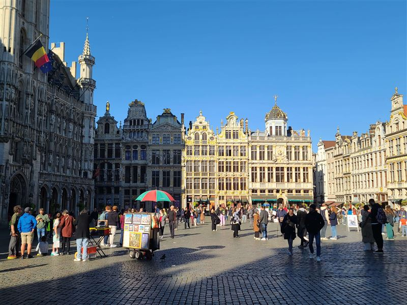
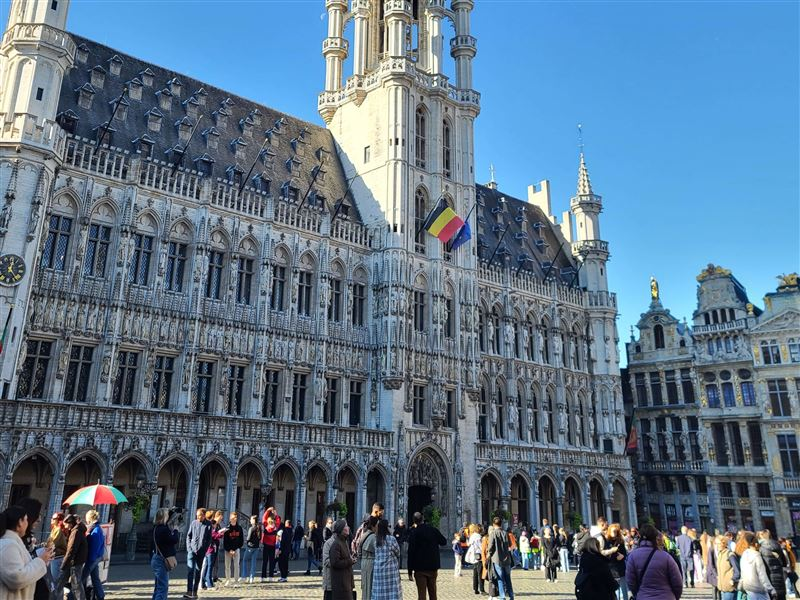
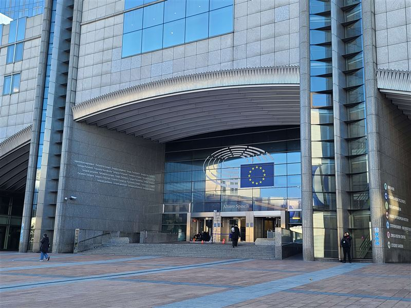
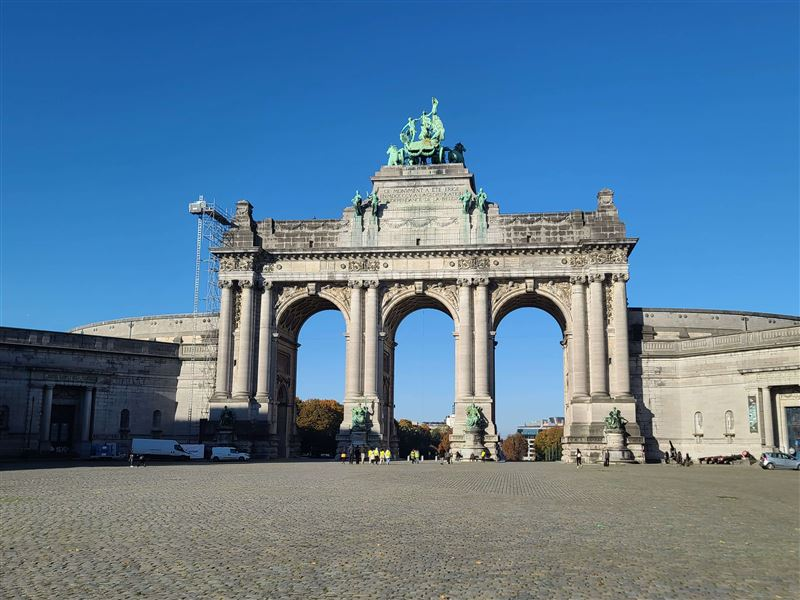
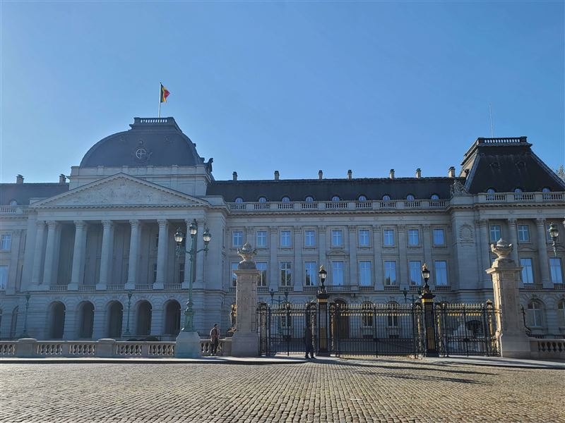
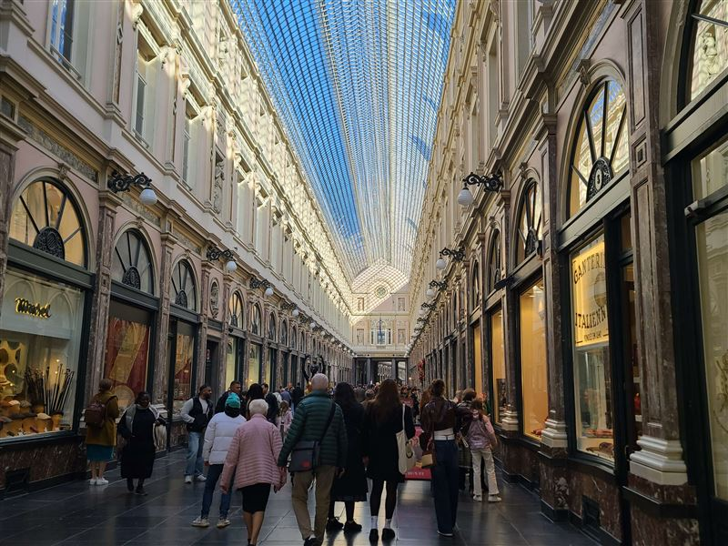

Explore Brussels
A Brief History
Brussels developed around a 10th-century fortress on the Senne River and became the capital of the Duchy of Brabant. Grand Place guild halls and the Gothic town hall date from the late Middle Ages. After Belgian independence in 1830 the city served as the national capital. Since the mid-20th century it has hosted European Union institutions. Art Nouveau buildings by Victor Horta line several central streets.
Attractions Map
Top Sights & Activities

Grand-Place de Bruxelles
The central square of Brussels is framed by ornate guildhalls and the city Town Hall. Documented as a market site since the 10th century, the ensemble was largely rebuilt after French bombardment in 1695. Today it hosts civic events, flower carpets, and seasonal markets that draw residents and visitors to this compact historic core.

Brussels Town Hall
A Gothic municipal building on the Grand-Place, begun in 1401 and completed in stages by 1455. Its 96-meter tower carries a statue of Saint Michael, patron of the city. Guided tours access council chambers and vaulted halls decorated with sculptures and tapestries that illustrate Brussels' civic history.

Altiero Spinelli building
Part of the European Parliament complex in the Leopold quarter, this building honors Italian federalist Altiero Spinelli. Completed in the 1990s, it contains offices for Members of the European Parliament, committee meeting rooms, and visitor facilities as EU institutions expanded in the capital.

Parc du Cinquantenaire
King Leopold II commissioned this park in 1880 for Belgium's 50th anniversary of independence. A U-shaped colonnade and triumphal arch anchor museums devoted to military history, art, and automobiles. Lawns, tree-lined paths, and fountains offer a green pause east of the city center.

Royal Palace of Brussels
Official working palace of Belgium's monarch on Place des Palais, though the royal family resides elsewhere. The present neoclassical facade dates from after 1900 under Leopold II. Summer openings allow public entry to state rooms where ceremonies and receptions are held each year.

Galeries Royales Saint-Hubert
A glass-roofed shopping arcade opened in 1847, designed by Jean-Pierre Cluysenaar. One of Europe's earliest covered passages, it connected luxury shops, cafes, and theatres. Writers and artists gathered here in the 19th century; boutiques and chocolate shops still line the three linked galleries.

Royal Gallery of Saint Hubert
The Royal Gallery of Saint Hubert, located northeast of the Grand Place, is a shopping arcade inspired by the Uffizi Gallery in Florence. Comprising the Queen's Gallery, King's Gallery, and Prince's Gallery, it was Europe's first shopping arcade when inaugurated in 1847. The galleries boast ornate storefronts under an arched glass roof and offer high-end shops, theaters, cafes, and restaurants.

La Monnaie - De Munt
La Monnaie - De Munt, also known as the Royal Theatre of La Monnaie, is a prestigious opera house located in Brussels. The building boasts a classical facade and marble halls, offering a grand setting for opera, music recitals, and dance performances. It is home to the National Opera of Belgium and is renowned for its opera productions. In addition to operas, the venue hosts concerts and dance shows.

Triumphal Arch
The Triumphal Arch, a magnificent structure erected in 1905, stands proudly within the serene Parc du Cinquantenaire in Brussels. This monument features a triple arch design crowned with an impressive bronze sculpture, making it a focal point of the park. As you escape the city's hustle and bustle, this lush green oasis invites travellers to enjoy leisurely strolls or picnics amidst its scenic paths and remarkable landmarks.

Autoworld
A vintage car museum showcasing a vast collection of classic and contemporary automobiles. The site is catalogued as a tourist attraction. Autoworld is listed among principal sites for Brussels within Belgium. Municipal and regional heritage listings document its place in the historic centre and visitor routes through Brussels.

Grand Place
Grand Place is a massive city square surrounded by elegant historic buildings dating back to the 14th century. It is the heart of all activities in Brussels, featuring the Town Hall with a statue of St. Michael the Archangel and the Maison du Roi, both showcasing Gothic architecture. The square hosts the Infiorata event every even year, where it's covered with a carpet of flowers from over five hundred thousand begonia plants.

Saint Nicholas Catholic Church
The Church of Saint Nicholas is a 12th century church located in Brussels, Belgium. It is one of the oldest churches in Brussels and its art collection includes a painting by Rubens. The church also houses several shops. The site is catalogued as a church.

Brussels Stock Exchange
The Brussels Stock Exchange is housed in an ornate and grand building that features Neo-Palladian architecture, flanked by lion statues. The building is a notable landmark in the area and often hosts street performances and other events in the large square outside. Its unique design reflects its historical significance as a financial institution, which continues to this day. travellers can also enjoy nearby attractions like the Christmas market or facilities like Toi-Toi restrooms.

Atomium
The Atomium, a colossal stainless steel structure in Brussels, was the centerpiece of the 1958 Worlds Fair. It symbolizes peace, progress, and an optimistic vision of the future. The design is based on the elemental structure of iron and represents a shift towards using atomic energy for positive purposes. Initially intended as a temporary installation, it captured the hearts of Belgians and has become one of Brussels' most renowned attractions.

Groot-Bijgaarden Castle
Groot-Bijgaarden Castle is a 17th-century marvel surrounded by a moat, featuring a redbrick tower and drawbridge. Nestled in the charming Belgian village of Groot-Bijgaarden, this historical castle dates back to the 12th century and showcases classic motte and bailey architecture.

Brussels Royal Palace
The Royal Palace of Brussels serves as the administrative residence and workplace for the Belgian royal family, although they do not live there. The palace, dating back to King Leopold II, boasts impressive reception rooms including the opulent Throne Room and the Mirror Room adorned with a ceiling covered in jeweled scarab beetles. A recent renovation has left its exterior gleaming.

Koningsplein - Beeld van Godfried van Bouillon
The site is catalogued as a tourist attraction. Koningsplein - Beeld van Godfried van Bouillon is listed among principal sites for Brussels within Belgium. Municipal and regional heritage listings document its place in the historic centre and visitor routes through Brussels.

Mont des Arts
Nestled between the Royal Palace and the Grand Place, Mont of the Arts is a charming hilltop area that boasts beautifully landscaped gardens, impressive architecture, and a rich cultural scene. This historic site offers travellers panoramic views of Brussels, making it an ideal spot for photography enthusiasts.

Parc de Bruxelles
Parc de Bruxelles, also known as Brussels Park or the Royal Park, is a sprawling urban oasis that spans over 13 hectares. It is the oldest public park in Brussels and was built on the grounds of a former royal hunting ground. The park features a picturesque landscape with an array of trees including plane, chestnut, maple, beech, and trellised lime trees.

Cambre Woods
Bois de la Cambre, a picturesque park designed in 1861 to mimic a natural landscape, is a beloved retreat for locals seeking nature and greenery in Brussels. Connected to the city by Avenue Louise, this urban public park offers various activities such as biking, jogging, picnicking, and even yoga or Tai-chi classes. The park features trees, water elements, and a lake with Robinsons Island waiting to be explored.

Abbaye de la Cambre
Abbaye de la Cambre, also known as Abdij Ter Kameren, is a historic Cistercian abbey in the Ixelles area of Brussels. The abbey complex includes a Catholic parish, a community of Norbertine canons, the National Geographic Institute, and La Cambre visual arts school. The picturesque gardens sprawl across multiple levels and are a highlight for travellers. This UNESCO World Heritage Site offers quiet contemplation with its small church and terraced gardens.

European Parliament
The European Parliament, the central institution of the European Union's political landscape, invites travellers to explore its workings through The Parlamentarium. This interactive center showcases the Parliament's multilingual nature and offers engaging displays that highlight its role in the EU's democratic system.

National Basilica of the Sacred Heart in Koekelberg
The National Basilica of the Sacred Heart in Koekelberg is a grand Roman Catholic place of worship, boasting an impressive art deco style with towering cupolas. It stands as the world's fifth largest cathedral and houses two museums, a theater, and a restaurant in its basement. travellers can enjoy panoramic views comparable to those from the Atomium.

Parc Elisabeth
The site is catalogued as a tourist attraction. Parc Elisabeth is listed among principal sites for Brussels within Belgium. Municipal and regional heritage listings document its place in the historic centre and travellers routes through Brussels. The site is catalogued as a tourist attraction.

Forest National
A major indoor arena in Brussels hosting concerts, sporting events, and shows. The site is catalogued as a tourist attraction. Forest National is listed among principal sites for Brussels within Belgium. Municipal and regional heritage listings document its place in the historic centre and visitor routes through Brussels.

Parc de Wolvendael
A charming park featuring ponds and playgrounds, ideal for families. The site is catalogued as a tourist attraction. Parc de Wolvendael is listed among principal sites for Brussels within Belgium. Municipal and regional heritage listings document its place in the historic centre and visitor routes through Brussels.

L'Archiduc
L'Archiduc is a legendary art deco-style cocktail bar in Brussels that has been a quintessential jazz temple since 1937. Originally opened by Madame Alice, it became renowned for attracting businessmen seeking discreet rendezvous. However, it was musician Stan Brenders who truly transformed the venue with his live jazz performances on the grand central piano. Over the years, L'Archiduc has hosted illustrious names in music and remains an institution of Brussels nightlife.

Zinneke Pis
A quirky statue of a dog peeing, completing Brussels' trio of urinating statues. The site is catalogued as a tourist attraction. Zinneke Pis is listed among principal sites for Brussels within Belgium. Municipal and regional heritage listings document its place in the historic centre and visitor routes through Brussels.

Belgian Chocolate Workshop in Brussels
In the heart of Brussels, near Mont Des Arts, lies a must-visit attraction for chocolate lovers - the Belgian Chocolate Workshop. travellers can indulge in various chocolate tours and workshops, including a popular session at Laurent Gerbaud Chocolatier. Participants have raved about their experiences, from making their own chocolates with skilled instructors to trying their hand at crafting delicious Belgium waffles.

Domaine régional Solvay (Château de La Hulpe)
A large estate with a beautiful castle, gardens, and walking trails near Brussels. The site is catalogued as a tourist attraction. Domaine régional Solvay (Château de La Hulpe) is listed among principal sites for Brussels within Belgium. Municipal and regional heritage listings document its place in the historic centre and visitor routes through Brussels.